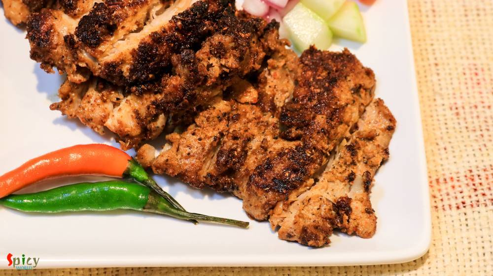

Simple and Easy Recipes

Nonveg Recipe
Jun 13, 2016
Earlier I have shared the recipe of 'Kolhapuri Egg curry', today I am going to share the same recipe, but with chicken and some changes. One of the main ingredient in Maharashtrian cuisine is 'coconut'. We both are not too much coconut eater but when it comes to make authentic dish, I always try to make the taste as close as possible. As this is a 'Kolhapuri' gravy, you have to incorporate coconut ...


Veg Recipe
Jun 8, 2016
This dish is an indo-chinese item which is very popular and frequently ordered in restaurants of India. Gobi means cauliflower. The recipe is very similar to chicken manchurian (which I have already posted), except the key ingredient here is cauliflower, not chicken. You can make this dish with potatoes, soya granules or raw jackfruit also. Every single time it tastes delicious and goes best with ...

Nonveg Recipe
Jun 6, 2016
Though I ate various types of kabab in India but had no clue about 'chicken shawarma'. I tasted this delicious dish first time in Austin, Texas and now they are available in pretty much all over the world. Shawarma' is a middle eastern kabab preparation which can be made of lamb / chicken / turkey or beef. I had them first time with pilaf and second time with pita bread. My husband and I both fell ...

Veg Recipe
Jun 4, 2016
'Khichuri' is a seasonal one-pot-meal. We generally enjoy it in monsoon or winter. The easiest dish of rice category is 'khichdi'. From bachelor to elder, everybody knows how to make it. But this is a tastiest variation of khichdi. 'Achar' means pickle, I used mango pickle here. The process is very simple, no need to fry or cook anything separately, everything will be cooked in one pot and one tim ...

Featured Post
Jun 1, 2016
Travel is always exciting, and travel with a new camera is more exciting. We were thinking of buying a DSLR camera for our food blog and as we have planned week long trip was on it's way, we thought of buying the DSLR so that we can use the new camera for our trip. We always admire the beauty of the Nature and this time we are visiting the most wonderful places on the earth. Our trip consists of Y ...

Nonveg Recipe
May 23, 2016
Last week I was thinking that my blog doesn't have the recipe of 'mangsher ghugni' and being a Bengali I felt very awkward. There is no Bengali in the world who doesn't know about this dish ... yes, 'mutton ghugni' is that much famous. On special occasions or guest's arrival in evening, 'mangsher ghugni' is a very common item we Bengalis make. It's a Indian version of 'chili'. We make the curry of ...

Nonveg Recipe
May 20, 2016
Every place in this world has their own tea stalls and also some unique dishes. You can never match the taste of tea stall's food with big restaurant's food ... a huge difference ! One of the famous item of those stalls in India is 'toast'. You can get so many types of toast from them like 'butter toast', 'french toast', 'plain toast' etc. I love to eat 'dim pauruti' or in fancy words 'savory fren ...

Veg Recipe
May 19, 2016
If your milk gets curdled, don't throw away, you can do a lot with it. Well, it's bengali style 'chanar kalia' where plain curdled milk / cheese balls are first deep fried and then cooked in a tomato based gravy. It's a vegetarian delicacy of Bengali cuisine. The dish tastes awesome and goes best with plain basmati rice. In any puja or special occasion, we make this dish and it always becomes the ...

Nonveg Recipe
May 16, 2016
This is a very popular dish from Mughlai cuisine in India. In this recipe medium size mutton pieces are cooked in a white, creamy, nut based rich gravy. 'Rezala' goes best with naan, biriyani, roti or paratha. I have already posted several recipe on 'rezala'. The dish has a very unique taste. It is neither very spicy nor very sweet. I made this last week and thoroughly enjoyed it with plain rice. ...

Veg Recipe
May 12, 2016
I was drawn towards this dish because of its easy method of cooking. In weekdays I never manage my time to make 'breakfast', but when I found out about this recipe where dosa batter doesn't need any farmentation ... I was interested ! You just have to rest the batter for 10 minutes, after that you can make your delicious breakfast in no time. One of the famous south indian breakfast is 'uttapam'. ...